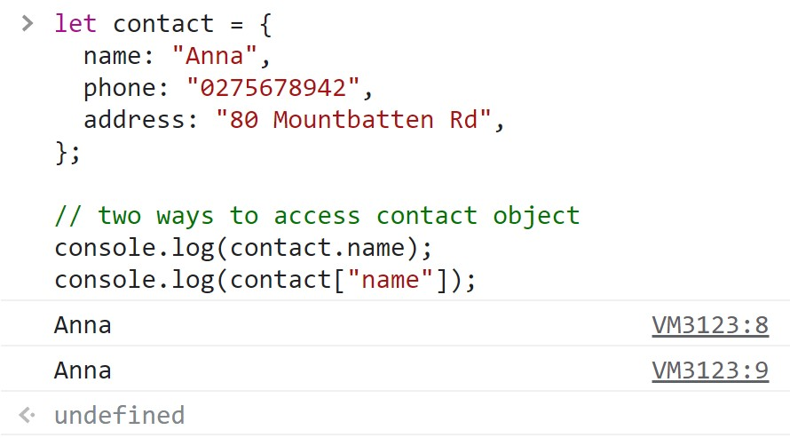
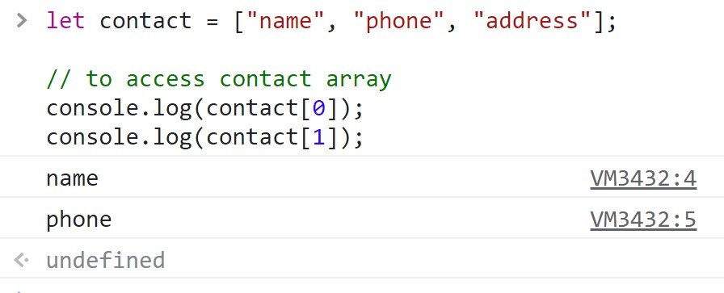
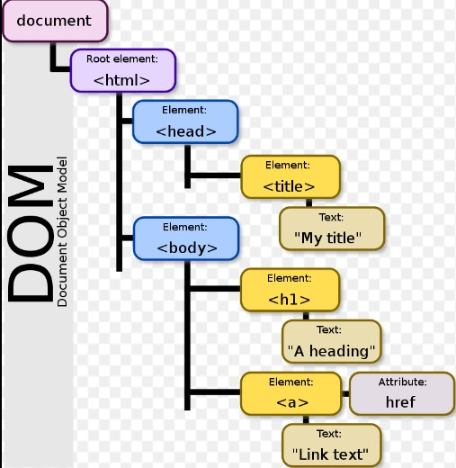
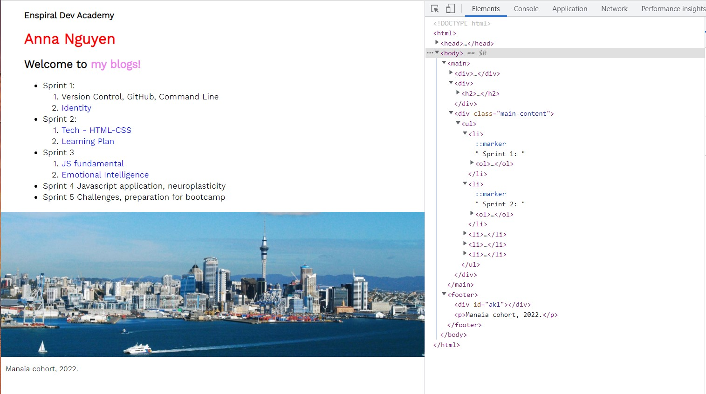
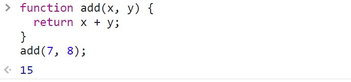

1. An analogy to describe JavaScript and its relationship to HTML and CSS
The process of building a house is the best example to describe the job and the relationship between Javascript, HTML and CSS. HTML is the hard structure – frame of the building, made of brick and solid wood. CSS is the style of the house (colour, size, position, etc). JavaScript adds the function of the house to make it “fancy”, lively such as animating images, controlling mutimedia, and updating content automatically.
2. Explain control flow and loops using an example process from everyday life
Control flow is the order in which each statement in a script is run. It is like a daily plan in the morning, you get up at 7 am, brush your teeth, have breakfast and go to work, etc.
Loops in JavaScript are used to perform repeated tasks while the conditions are met. Loops can be used many times. For example, you run a list of songs in your iphone. When one song is finished, it goes to the next song until you finish the last one, it will go back to the first song of the list.
3. Explain the difference between accessing data from arrays and objects
Objects and arrays are both variables that can contain many values.
Objects use named indexes.
Arrays use numbered indexes.
With object, the values are written as property name:value pairs. There are 2 ways to access the object values: dot notation and bracket notation as seen in the photo below.
 Array also contains many values under a single name with index numbers. Index numbers start with 0. We can only use bracket notation to access the value and the index number.

4. Describe what the DOM is and an example of how you might interact with it
The Document Object Model (DOM) is a programming interface that presents the page with logical structure and allows us to create, remove or change the elements of HTML. DOM is like “ a tree” on which HTML elements and attributes are the branches. JavaScript uses the DOM to access the document and its elements to work with them.

To interact with DOM, right-click the mouse on the page you want to see, and go to “inspect”. It will show you another window like the picture below. You can change anything you want with elements and see how it will appear on the page, but those changes are not permanent. It will come back to the original one when you refresh the page.

5. Explain what functions are and why they are helpful
The function is a procedure that is designed to perform a task. It takes some input, processes and returns the output. It only works within the scope that is set when the function is declared. A function is helpful because it can be used many times instead of rewriting the code.
